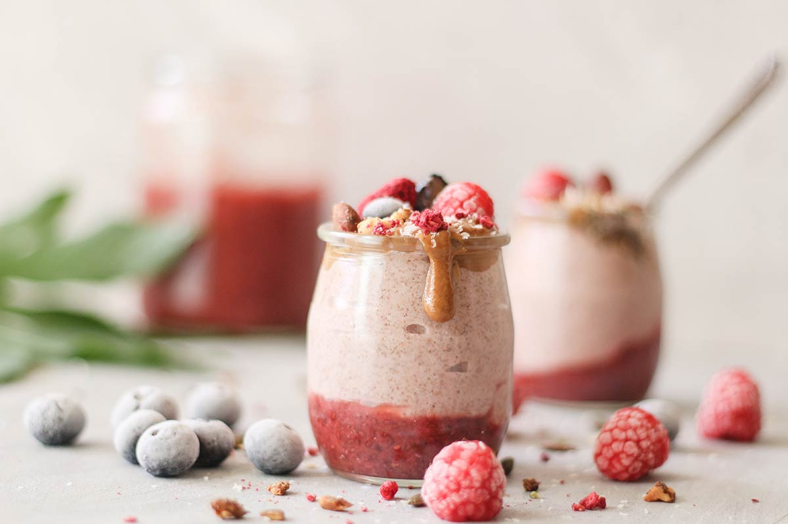

Berryfast smoothie
Make the most of the berry season with a glass of fruity goodness
Photograph by Claudia Soares
- Preparation time
- 5 min
- Difficulty
- Easy Peasy
- Servings
- 1 serving
Ingredients
- small ripe banana
- sbout 140g blackberries, blueberries, raspberries or strawberries (or use a mix), plus extra to serve
- apple juice or mineral water, optional
- runny honey , to serve
Method
-
Step 1
Slice the banana into your blender or food processor and add the berries of your choice. Whizz until smooth. With the blades whirring, pour in juice or water to make the consistency you like. Toss a few extra fruits on top, drizzle with honey and serve.